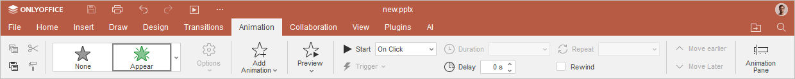
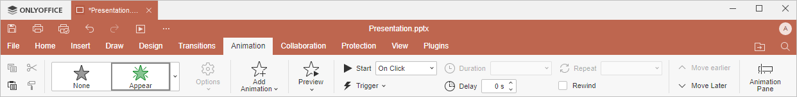

Kartica Animacije
Kartica Animacije u Presentation Editor-u omogućava upravljanje efektima animacije. Možete dodavati efekte animacije, određivati način na koji se animacije kreću i podešavati druge parametre animacije kako biste prilagodili svoju prezentaciju.
Odgovarajući prozor Online Presentation Editor-a:

Odgovarajući prozor Desktop Presentation Editor-a:

Korišćenjem ove kartice možete:
- izabrati efekat animacije,
- podesiti odgovarajuće parametre kretanja za svaki efekat animacije,
- dodati više animacija,
- promeniti redosled efekata animacije korišćenjem opcija Pomeri ranije ili Pomeri kasnije,
- pregledati efekat animacije,
- podesiti opcije vremena animacije kao što su trajanje, kašnjenje i ponavljanje za efekte animacije,
- uključiti ili isključiti premotavanje.